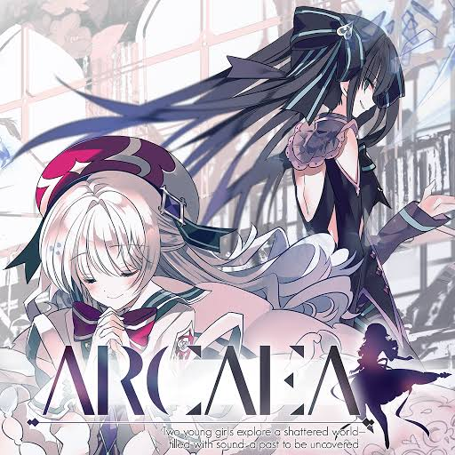
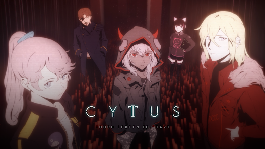
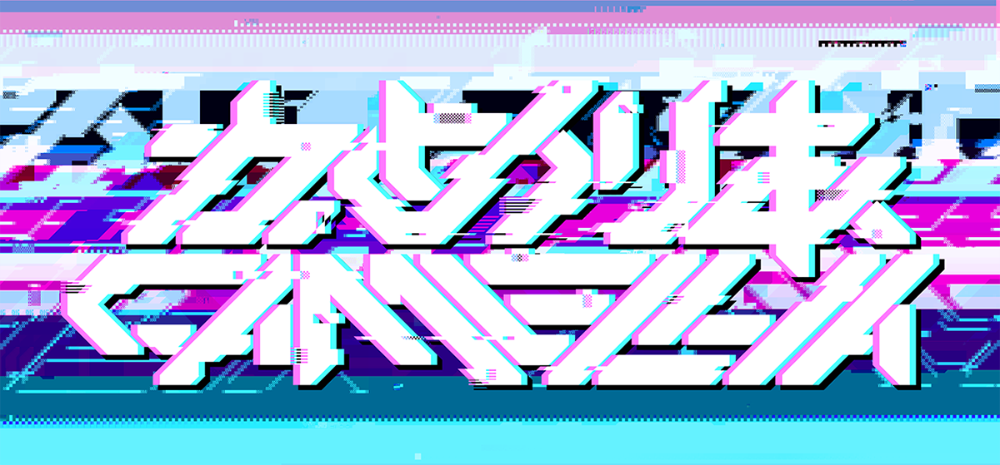
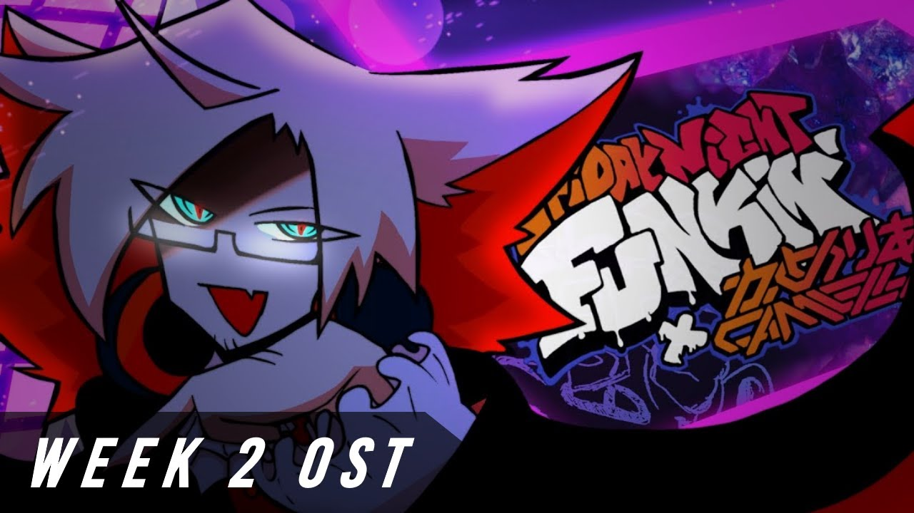

Camellia (Japanese: かめりあ), real name Masaya Ōya (Japanese: 大箭将也), also known as Cametek, is a Japanese electronic music producer famous for his fast songs, diverse range of genres and his prolific history of contributing to rhythm games, most notably Sound Voltex.
Born in 1992, Camellia first began making music when he was 10. In the early to mid 2010s, Camellia made several Vocaloid works and some Touhou dojin music. He first began to contribute to rhythm games in around 2012, and participated in several BEMANI music contests. Camellia managed to became a major name in the Sound Voltex series by frequently having his (often insanely fast and difficult) songs included in the game. He has contributed to many, many other rhythm games since then, including Arcaea, Cytus II, WACCA, and was also featured on osu! and Beat Saber.
 
Camellia is proficient with piano, bass, and guitar. He has a diverse range of genres, ranging from EDM, dubstep/drumstep, electro, glitch hop, psytrance, to trap, hardcore, hardstyle, and speedcore, and even denpa. He regularly collaborates with vocalist nanahira.
Camellia is a member of Alstroemeria Records, EXIT TUNES, DOWNFORCE, beatnation RHYZE, and he also has his own doujin circle label, KamelCamellia. Camellia has made guest appearances in other doujin circles such as HARDCORE TANO*C and Diverse System.
Camellia has also contributed to the OST of the game Dweller's Empty Path by Temmie Chang, the artist and illustrator of Undertale and Deltarune. In addition, he has also contributed his music to the game Mad Rat Dead.
